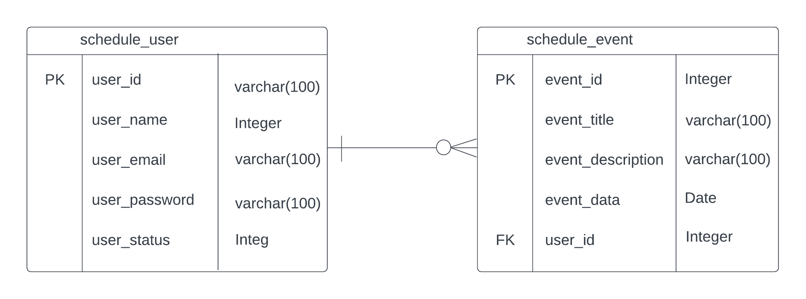

Um diagrama entidade relacionamento (ER) é um tipo de fluxograma que ilustra como “entidades” (pessoas, objetos ou conceitos) se relacionam entre si dentro de um sistema. Diagramas ER são mais utilizados para projetar ou depurar bancos de dados relacionais nas áreas de engenharia de software, sistemas de informações empresariais, educação e pesquisa.
O DER do DayTrack possui apenas duas entidades: o schedule_use e schedule_event. Estes representam respectivamente o usuário e o evento. Um usuário se relaciona com zero ou mais eventos, enquanto que um evento se relaciona apenas um usuário, pois ele é exclusivo de cada usuário que o cria no sistema e não pode existir a menos que tenha sido criado por um usuário.
